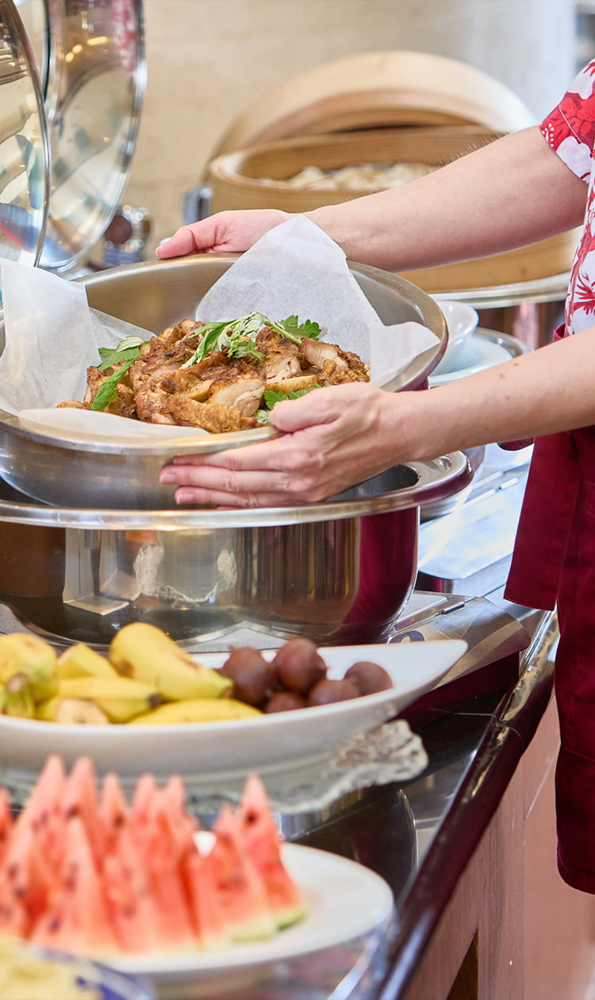
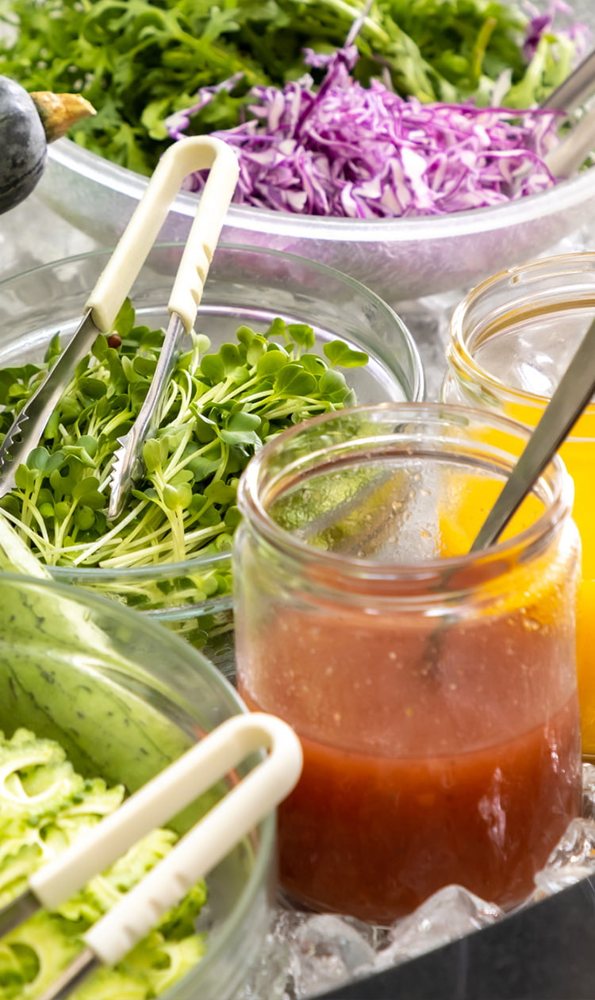
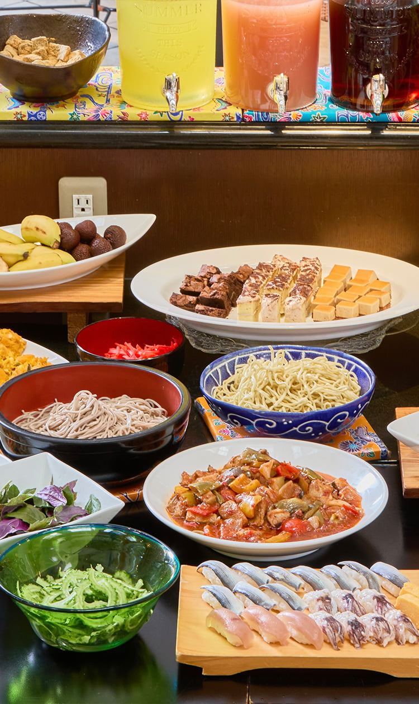
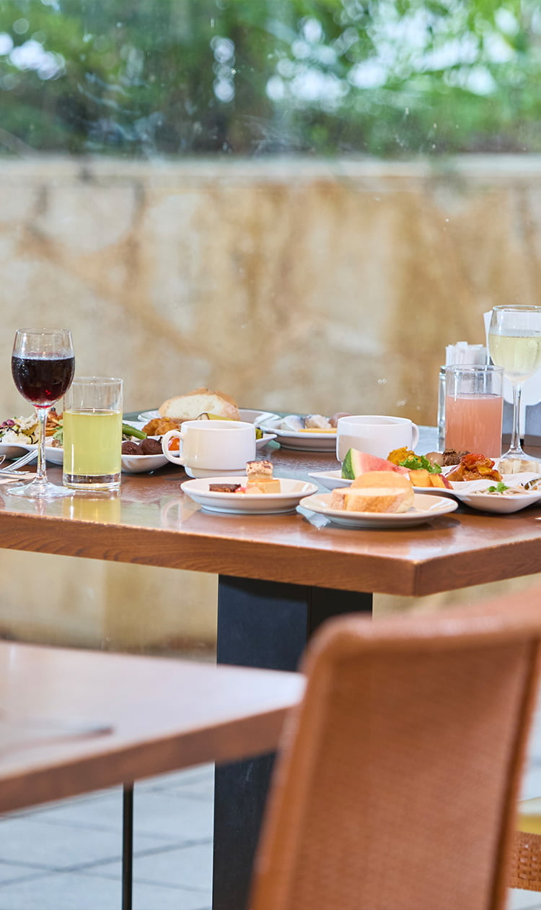
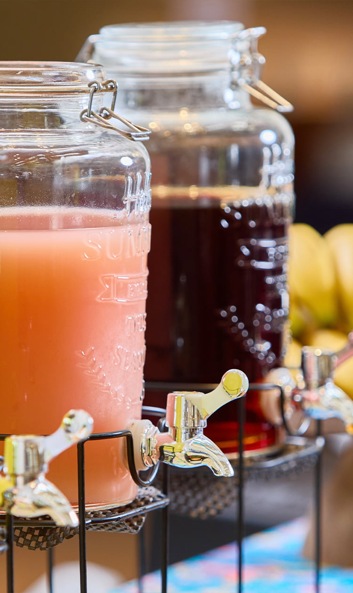
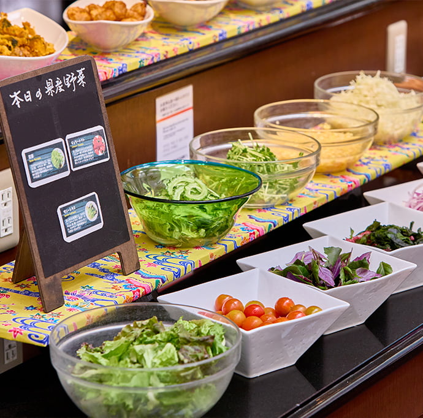
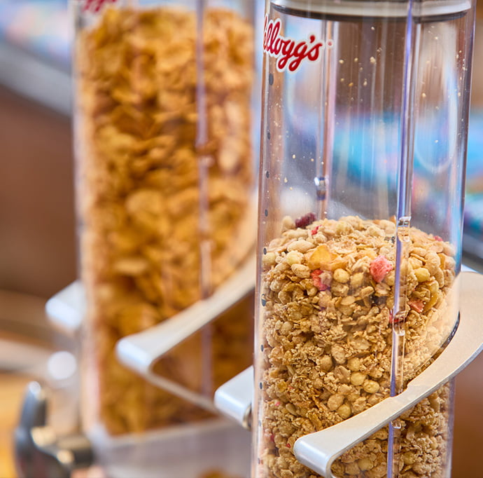
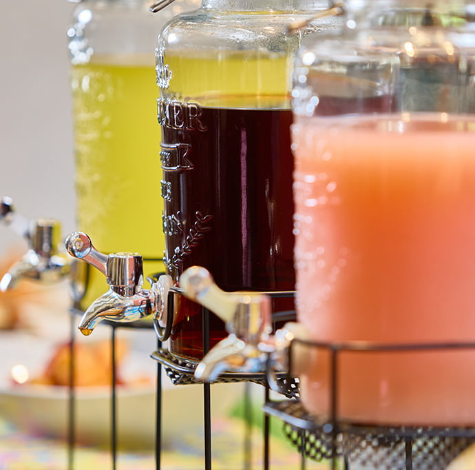
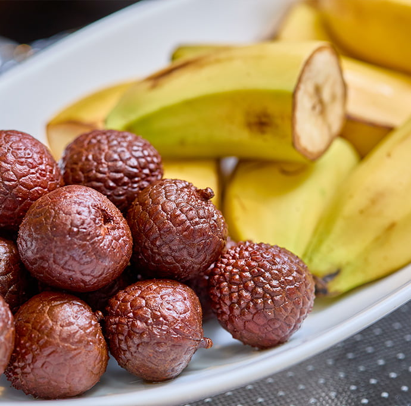
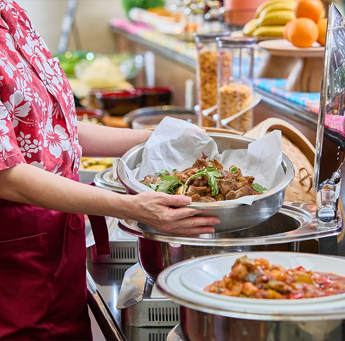

Galerie photos










Kevin, Loïc, May Nhia, Stéphanie, Estelle
Du 5 Avril au 27 Avril 2026
Grand buffet près de Naha (Smile Hotel Naha City Resort), avec options matin/midi et formule Agu Pork shabu-shabu à volonté sur réservation.










Restaurant Kafuka est une option simple et efficace pour un groupe de 5 : buffet petit-déjeuner, buffet lunch et formule shabu-shabu à volonté dans une zone pratique de Naha. Pour l'option crabe, il faut vérifier la carte saisonnière au moment de réserver.
Conversion indicative sur base 1 EUR = 183.02 JPY (réf. BCE du 04/03/2026). Taux variable. Les tarifs changent selon la date, le créneau et l'offre active.